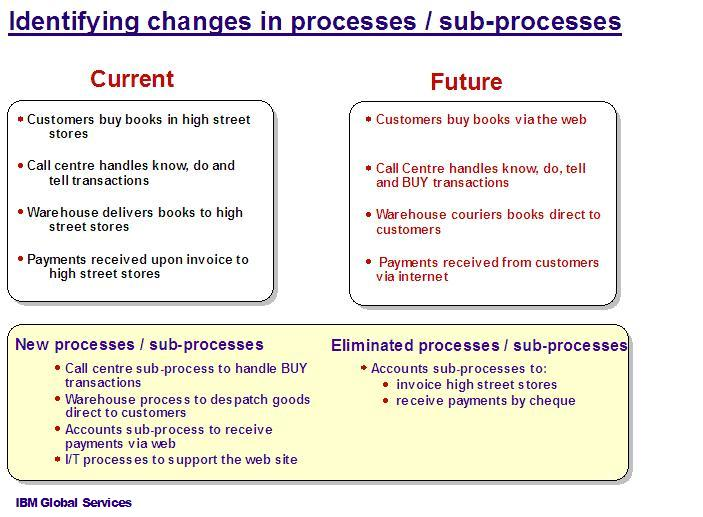
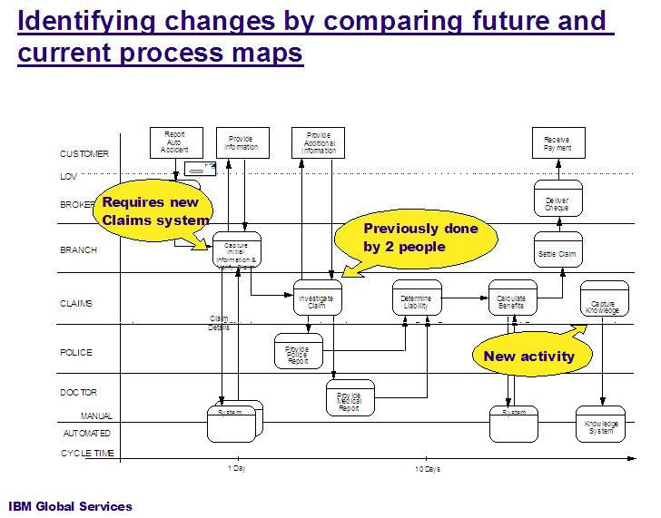

Major changes in processes / sub-processes
This example shows how by comparing the Current and Future states, you can identify the changes in processes and
sub-processes that will be required.

Supporting documentation identifying the process projects
Proposed process projects
|
Resource estimate
|
Cost estimate
|
Potential risks
|
1. Design and implement Call Center sub-process for "buy" transactions.
|
2 people
|
Low
|
Minimal, additional training of call center personnel required.
|
2. Design and implement Warehouse process to dispatch goods directly to customers
|
5 people (2 F/T, 3 P/T)
|
Medium / High
|
Involves selection of business partner (courier service). Evaluation and selection not yet started. No
existing contracts in place. No processes in place to manage and monitor business partner performance.
Business practices / legal will need to be involved. This could be time-consuming.
|
etc.
|
etc.
|
etc.
|
etc.
|
Changes in the sequence of activities or how these are enabled (with organization and
technology)
Where the sub-process remains the same, but the activities change, gaps can be identified from the process maps as
shown in this example based on a Physical Line of Visibility Chart (Line of Visibility Enterprise Modeling technique)

|